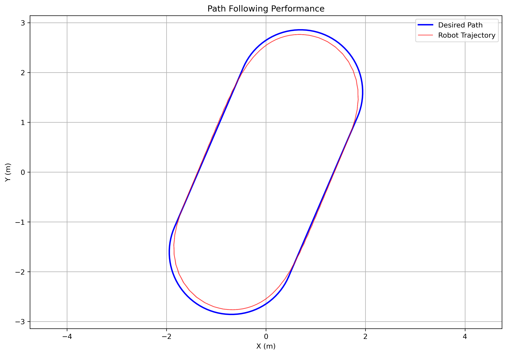
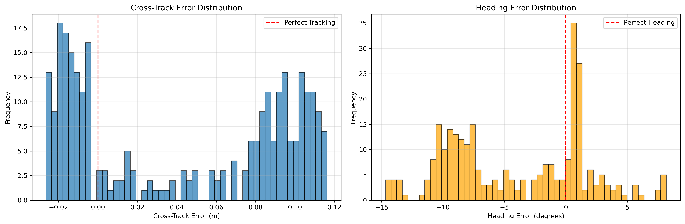
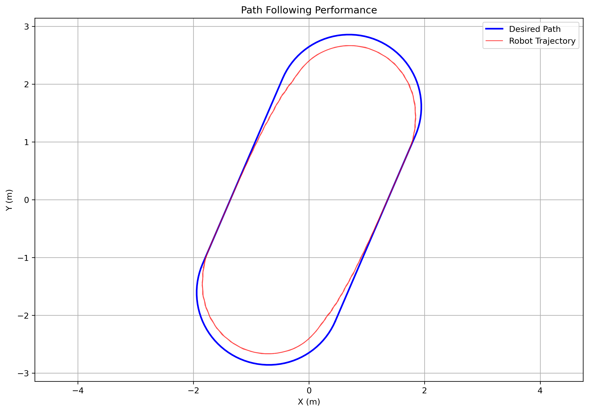
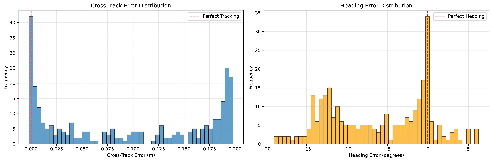
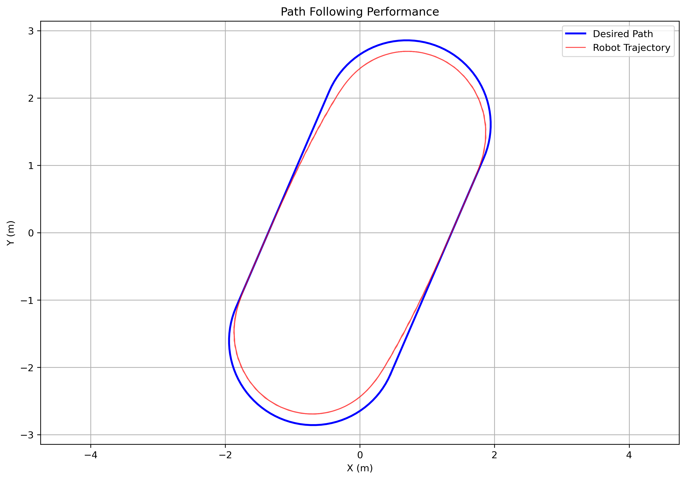
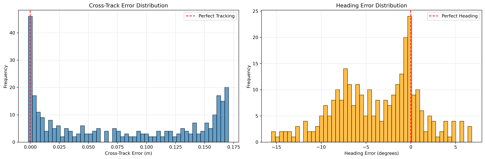
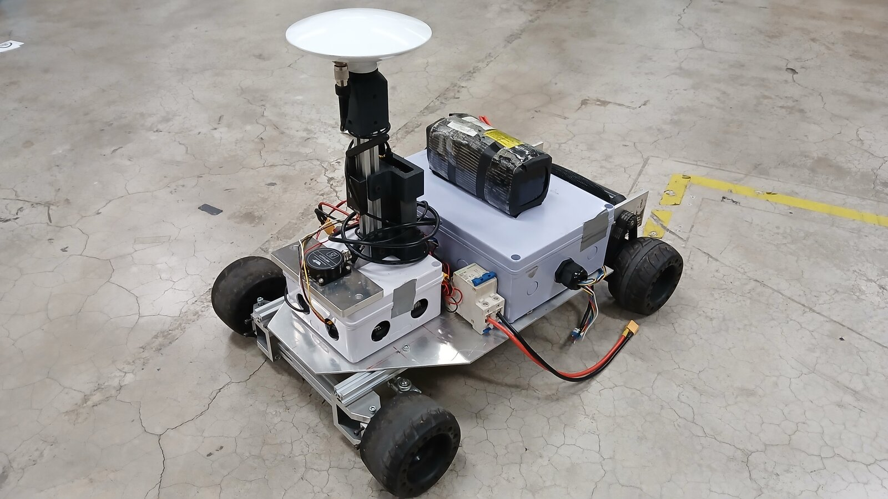
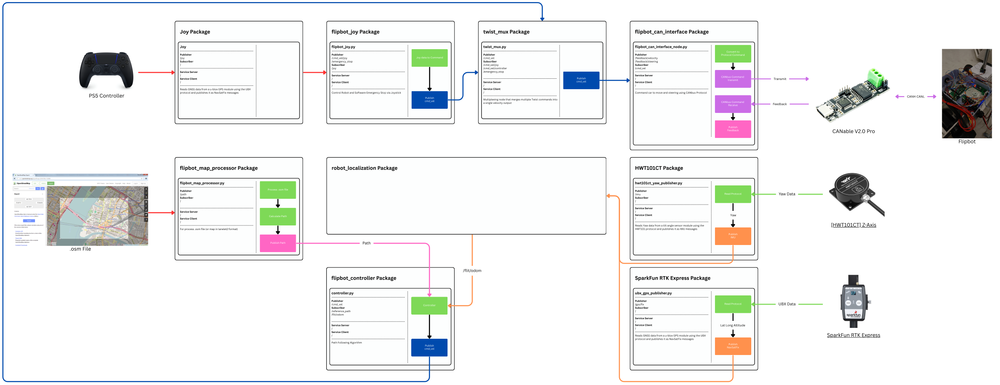

Overview
Autonomous outdoor navigation for Flipbot, a 1/5-scale RC car with Ackermann steering, built during an internship at Gensurv Robotics. Lane-level driving outdoors needs position accuracy far beyond standard GPS, plus a map of where the lanes are.
RTK GNSS gives the car a centimeter-level position, and Lanelet2 HD maps give it the lanes and routes to follow. An extended Kalman filter fuses the position with a heading sensor, a path follower drives the car over CAN bus, and a joystick can take over at any time. Pure Pursuit, Stanley, and a combination of the two are compared on the same track.
My part was the autonomous navigation, the extended Kalman filter, the CAN-bus link to the motor and servo, and the ROS 2 system in Docker with its safety supervisors.
Hardware
| Vehicle | Flipbot, 1/5-scale RC car with Ackermann steering, up to 3.0 m/s, steering range \(\pm 35^\circ\) |
|---|---|
| Positioning | SparkFun RTK Express, one as base station and one on the car, 1.4 cm horizontal accuracy |
| Heading | WitMotion HWT101CT Z-Axis Inclinometer |
| Drive | Two Flipsky 6384 190KV brushless belt motors, left and right wheel, over CAN |
| Steering | RX-64 Servo Over RS485 |
| Control Board | NXP board with two CAN channels |
| CAN Interface | CANable 2.0 Pro USB adapter, or a TJA1050 module |
| Manual Control | Joystick with an Emergency Stop |
System
| Computer | NVIDIA Jetson Orin Nano Developer Kit |
|---|---|
| Control Rate | 100 Hz commands, 50 Hz feedback |
| Position Rate | 5 Hz RTK position, 200 Hz heading, 50 Hz fused pose |
| Software | ROS 2 Humble in Docker, Lanelet2, RViz2, twist_mux |
Process
Get a centimeter-level pose
An extended Kalman filter fuses two sensors into the vehicle pose.
- RTK GNSS gives the position at 5 Hz.
- The tilt sensor gives the heading at 200 Hz.
- The filter publishes the fused pose at 50 Hz.
Build the HD map
A map tool creates Lanelet2 tracks as OpenStreetMap files, such as an oval, a stadium and a random circuit. The files are projected to a local east-north-up frame, and a centerline path is generated for the car to follow.
Follow the path
One launch file starts the chosen path follower, which reads the centerline path and the pose and outputs a velocity command.
- Pure Pursuit steers toward a point on a lookahead circle.
- Stanley corrects the cross-track error and the heading error directly.
- The combined controller blends the two with a weight set by the path curvature, favoring Pure Pursuit on straights and Stanley in curves.
Drive the car
The velocity command is converted into a motor speed and a steering angle, and sent to the motors and servo over CAN. twist_mux lets the joystick override the controller, so a driver can stop the car at any time.
Record and analyse
Every run is recorded as a rosbag. An analysis script then computes five groups of metrics.
- Cross-track error.
- Heading error.
- Control smoothness, from acceleration and jerk.
- Stability, from the variance of both errors.
- An overall score.
Results
Localization stayed below 2 cm outdoors.
The three path followers were compared on the real car on a stadium-shaped track with a 14.85 m path, at a target speed of 1.0 m/s, for 2 minutes each, with the same RTK pose source and map. Pure Pursuit tracked the line closest and drove the smoothest. The combined controller had the lowest heading error. Stanley gave the largest errors and the roughest steering.
Table 1. Path following on the real car, best value in bold
| Controller | Mean Cross-Track Error (m) | RMS Cross-Track Error (m) | Max Cross-Track Error (m) | Mean Heading Error (\(^\circ\)) | Angular Jerk RMS (\(\mathrm{rad/s^3}\)) |
|---|---|---|---|---|---|
| Pure Pursuit | 0.054 | 0.068 | 0.116 | 5.43 | 156.1 |
| Stanley | 0.095 | 0.123 | 0.198 | 6.84 | 578.1 |
| Combined | 0.078 | 0.102 | 0.171 | 4.63 | 245.0 |






Figures and Video

